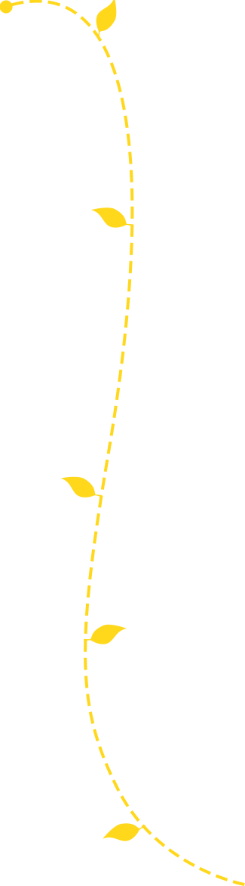

至慧大事记

2016年8月
美国教育部部长小约翰·B·金博士（Dr.John B. King Jr.）一行参观至慧学堂，并试听至慧学堂少儿数学思维课程。美国教育部部长办公室主任埃玛·范德哈、国际事务主任琳-A-麦克拉夫琳、美国驻上海总领事馆文化领事卢乔书等陪同访问。
2016年9月
至慧学堂在读学员突破万人。
2016年10月
由加拿大埃德蒙顿孔子学院组织，加拿大阿尔伯塔省埃德蒙顿市教育局理事会理事Bridget Eileen Sterling、孔子学院院长李伟博士、埃德蒙顿中小学校长代表组成访问团，考察中国中小学基础教育，并赴至慧学堂进行访问，试听少儿数学思维课程。
2016年12月
《至慧兔的奇妙数学之旅》系列绘本第一辑由华东理工出版社出版，在新华书店、天猫、当当、京东、亚马逊等多渠道销售。